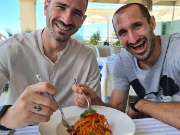

Ballo di famiglia, David Leavitt, SEM, 2021
Home › Blog
Ammartaggio
"Ballo di famiglia" è un insieme di racconti
di David Leavitt, pubblicati da SEM con le nuove traduzioni di Fabio Cremonesi.
Leavitt ha esordito poco più che vent’enne e le sue opere, che tra le prime affrontavano apertamente il tema dell’omosessualità,
hanno aiutato giovani di tutto il mondo a riconoscersi e trovare il coraggio di parlare anche con famiglie del calibro di
"Ballo di famiglia".
Non voglio dire che le famiglie italiane
siano migliori – se ancora ne esistono -, ma dopo aver letto anche solo uno
di questi racconti converrete con me che forse forse ci è andata ancora bene.
Non è un caso che l’abbia finito oggi come non è un caso che ne voglia parlare oggi, il 17 maggio 2021, Giornata
internazionale contro l’omofobia, la bifobia e la trasfobia. No, non credo che sia necessario, né che aiuti nessuno. Credo solo,
come sempre, che la vita sia piena zeppa di coincidenze.
David Leavitt nasce a Pittsburgh, si laurea a Yale nel 1983 con professori del calibro di Harold Bloom e
Gordon Lish :
Well, as it happens I do have a few stories on hand, and I’m sending them along within the next day or two.
I hope you can find something you like
- per saperne di più riguardo quest’ultimo, consiglio il podcast L'abisso editoriale ,
tutti i libri di Raymond Carver
e quelli di Franz Kafka – e
si trasferisce in Italia nel 1993, per rimanerci con il suo compagno Mark fino al 2000.
Trattandosi di nove racconti non posso consigliare la lettura, a chi non si è già abituato a questa tipologia di scrittura,
senza prima dare due dritte. Io ho sempre avuto un buon rapporto con
Cortázar e l’arte del fare i conti:
Uno scrittore argentino che ama molto la boxe mi diceva che in quella lotta che si instaura fra un testo
appassionante e il suo lettore, il romanzo vince sempre ai punti, mentre il racconto deve vincere per knock out.
Ovviamente non sto parlando di numeri o di matematica – Dio me ne scampi -:
il termine racconto deriva dal latino contus ovvero far di conto, tener conto di qualcosa, far sì che non si dimentichi.
Il racconto deve quindi avere una sua astuzia, un qualcosa che lo renda memorabile seppure non duri molto –
e sappiamo quanto durata e lunghezza contino per essere ricordati in questo mondo, non è così? - e una sua struttura,
contenuta in un massimo di cinquanta pagine. Deve poi essere allusivo, equilibrato e semplice, non occupare spazio con frasi
o parole che non sono necessarie .
Si tratta di un contenitore o una fotografia: il personaggio è statico, non cambia se non fuori dall’immagine, dal focus.
L’esempio è La metamorfosi di Kafka in cui il cambiamento è avvenuto fuori dal racconto: tutto inizia in medias res. E per chi ama
le fotografie o i contenitori, come me, per il fatto che ti danno una parvenza di ordine, staticità e sicurezza, il tempo passa
ma
tu non passi mai , non potrà non innamorarsi di questa forma letteraria.
Certo, dobbiamo dircelo chiaramente, il rischio di rimanere delusi, se non addirittura depressi, dopo la lettura...
C'è. Perché raramente i personaggi, anche in questo caso, cambiano, migliorano ed evolvono, se non nella tua testa.
Diciamo che - scusa Cortázar - il romanzo vince per la speranza che ti dà, il racconto per l'immaginazione che ti dona.
Scrivere racconti non è scrivere una fiaba,
una parabola, una barzelletta, un diario, una serie cinematografica, un sogno, ma potrebbe essere una di queste cose.
Venendo al dunque - perché qui la stiamo trasformando in una ridicola lezione di letteratura spiccia - il solo ed unico dovere
del lettore, invece, è concludere il racconto lo stesso giorno in cui l’ha iniziato. Un racconto non si può lasciare a metà:
che tu lo stia leggendo da venti minuti o due ore – ma se sono veramente due ore chiediti se sei veramente di fronte ad un racconto -,
devi finirlo. Pena?
Edgar Allan Poe che ti viene a trovare nei tuoi incubi peggiori.
L’ambiente è la media borghesia americana degli anni Ottanta – sisi, avete letto bene: borghesia + americana + anni Ottanta = orrore -.
Quella delle casette – casone – a schiera con piscine, cani, tavole apparecchiate splendidamente, cibo un po’ meno –

-, barche, foreste, vicinato, case sull’albero e prati immensi, rinchiusi da ringhiere imbiancate di fresco per nascondere la puzza di stantio che si sente una volta oltrepassata la soglia.
Quando superiamo la porta di ingresso, infatti, ci chiediamo subito se siamo finiti in Giappone o in America:
si contano più cicatrici che persone, ma l’oro dell’arte del Kintsugi è sostituito con l’ottone.
Non fidarti mai della pulizia. Tutte le cose brutte – le cose davvero brutte – succedono
nelle case pulite, dove tutto è ordinato e tutti si dicono buongiorno e nient’altro.
Uno dei miei preferiti è "Contando i mesi". Facile immaginare di cosa tratti, difficile immaginare come lo tratti:
Devi evitare la chemioterapia. Una donna che conoscevo ci ha lasciato la pelle. Dicono che è stata la terapia ad ammazzarla,
che era peggio della malattia in sé. [...] Hai sentito Roy? È ancora sposato con quella bambina?
Una meravigliosa parabola sulla difficoltà delle persone nell'evitare di dare aria alla bocca prima
che ciò che disprezzano accada proprio a... loro! O, riassumendola alla siciliana: non ghiabba e non maravigghia.
Comunque il libro ci serve anche come insegnamento per chi, ancora, reputa la fortuna strettamente collegata al benessere mentale.
Avere soldi non ti permette altro che la possibilità di pagarti un buon analista: il lavoro lo dovrai comunque fare sempre, e solo, tu. E queste famiglie, con tutti i privilegi di cui dispongono, ne sono l'esempio.
Ci sono figli non riconosciuti e figli non riconoscenti, madri alle prese con mariti che scappano, padri alle prese
con figli che vogliono rubare loro il ruolo, sorelle che lottano una vita intera per comprendere il tragicomico rapporto madre-figlia, amanti ben poco nascosti, incidenti e malattie invece ben bene nascoste e vacanze che hanno tutto il sentore del classico Natale che vorresti finisse il più presto possibile ma al quale
non puoi sottrarti, per quella famosa legge contro l’astensione che ancora non ho trovato scritta in alcuna Costituzione Familiare.
Ma soprattutto ci sono frasi di questo tipo:
C’è un uomo che sta facendo uno studio sull’Olocausto […] Ha fatto un grafico. Su un asse ci sono appagamento/disperazione,
sull’altro successo/fallimento. Ciò significa che ci sono quattro gruppi di persone: quelli appagati dal successo, che sono facili
da comprendere, quelli che sono disperati pur avendo successo, come tanta gente che conosciamo, e quelli che sono disperati per i
loro fallimenti. Poi c’è il quarto gruppo: le persone appagate dai fallimenti, che per vivere non hanno bisogno della speranza.
Sai chi sono queste persone? […] Quelle persone sono i sopravvissuti.
Non credo esistano parole migliori per descrivere ciò in cui ho sempre creduto. Penso che ognuno abbia le proprie esperienze
e che quelle brutte servano a poco, ma una cosa buona la facciano: aiutano a comprendere le diverse gravità, perché
Se capisci una disperazione, capisci qualsiasi disperazione.
Certo, non è il caso di tutti e questa giornata scritta con la G fa comprendere come ci sia ancora molta strada da fare a tal proposito.
Ma questo libro può fare al caso di chiunque soffochi all'interno del non detto, specie quando a non dire sono persone che ti hanno messo al mondo probabilmente, almeno in origine, col fine di insegnarti soprattutto l'arte del dire.
Poi i tempi passano, le giornate si susseguono, i buoni princìpi finiscono per essere scheletri nell'armadio
- dei tuoi - e tu ti senti come Nina che dovrebbe andare dallo psichiatra perché convinta di essere un alieno.
Diverse le tematiche, diversi i personaggi, ma ho trovato che tutte e tutti convogliassero in un solo, grande e
invalicabile scoglio: l’incapacità della classe colta americana – e aggiungerei non solo – di accettare almeno tre
degli argomenti trattati in questi racconti, ovvero la malattia, l’omosessualità e la sessualità. Disgustati da tutto
tranne che dai propri errori, i genitori si trasformano in figli, i mariti in mogli e viceversa. I nodi, alla fine di queste
riunioni obbligate, tornano al pettine, ma il pettine si rompe e il suo unico scopo rimane un vano ricordo. Almeno, questa è la
continuazione o conclusione che io ho immaginato per ogni racconto. Pessimista? Può essere.
Data la sua infelicità, erano così indulgenti con lui che gli venne un dubbio: forse aveva la leucemia e nessuno glielo diceva.
Poi si rese conto di non avere la leucemia. Di essere semplicemente la vittima passiva di una famiglia in pezzi.
Alla fine di questi racconti capisci che ogni gruppo, assembramento, unione di cervelli più o meno capienti, comporta lati positivi e lati negativi. Per quanto riguarda la famiglia, i primi sono: appoggio, fiducia, compagnia, privilegi, serenità, possibilità, soddisfazioni, aiuti e sicurezza. I secondi, solo per citarne
alcuni, sono: chiusura, gelosie, paure, restrizioni, riconoscenza, obblighi, rancori, insoddisfazioni, appuntamenti, firme.
In tutto ciò, se hai la mia fortuna, puoi ancorarti a uno o due elementi che, vuoi per l’età, vuoi per l’apertura mentale,
ti tratteranno come un anello della catena, dunque utile ma non l’insostituibile parte di questa
fragile rete . So che è molto gratificante, per molti, essere l’insostituibile. Per me è sempre stato un gran lavoraccio, oltre che un'enorme finzione, da cui son sempre riuscita a fuggire, tranne che in famiglia.
In caso contrario, puoi ancorarti a te stesso o crearne una nuova, magari non incastrandoti sui soliti nodi.
Nelle prime pagine Leavitt spera di
descrivere la disperazione in un’opera narrativa senza mettere in fuga il lettore e
la mia risposta, dal basso della mia disperazione, non può che essere positiva.
Continua a leggere

Tomorrow, Gabrielle Zevin, Nord, 2022
10 Maggio 2025
Alla veneranda età di 26 anni ho approcciato per la prima volta agli audiolibri come antidoto contro la noia di
camminare per andare al lavoro. Non sono il tipo che cammina per sport né per piacere. Cammino per necessità.
Leggi l’articolo

Klara e il sole, Kazuo Ishiguro, Einaudi, 2021
16 Giugno 2022
Ho letto giusto due giorni fa la conversazione tra un ingegnere di Google,
Blake Lemoine, e la sua LaMDA, un’intelligenza artificiale utilizzata per generare chatbot che interagiscono con gli utenti.
Qui trovate la reale conversazione avvenuta tra l’ingegnere e l’IA che ha tutto a che vedere con una qualsiasi interazione che...
Leggi l’articolo

Monsieur Solitaire, 4321, Paul Auster, Einaudi, 2017
1 Settembre 2024
Cosa sarebbe stato della nostra vita se invece di quella scelta ne avessimo fatta un'altra?
Che persone saremmo oggi se quel giorno non avessimo perso il treno, se avessimo risposto al saluto di quella ragazza,
se ci fossimo iscritti a quell'altra scuola, se... Ogni vita nasconde, e protegge, dentro di sé tutte le altre che non si sono realizzate,
che sono rimaste solo potenziali...
Leggi l’articolo

Due chicche per gli amanti dei libri sui libri
1 Settembre 2024
Due libri per chi è "del mestiere", ossia due libri che potrebbero piacere maggiormente
ai rari esemplari che hanno deciso di fare il dottorato o, ancor peggio, di entrare nel mondo dell'editoria.
Leggi l’articolo

La simmetria dei desideri, E. Nevo, Neri Pozza, 2010
21 Luglio 2022
Accanto ad uno dei miei scrittori preferiti, David Grossman - leggetelo - , c'è ormai da
parecchi anni un altro dei massimi scrittori israeliani viventi: Eshkol Nevo.
Mi sono, però, avvicinata da poco a quest'ultimo, tramite:
Leggi l’articolo

L'opposto di me stessa, M. Mason, H. Collins, 2022
5 Maggio 2022
Perchè quando la sofferenza è inevitabile, l’unica cosa che si può scegliere è lo scenario. Martha ha quarant’anni e
una vita apparentemente perfetta, un uomo che la venera dall’infanzia e una famiglia stramba ma piena d’amore. Eppure è infelice.
Leggi l’articolo